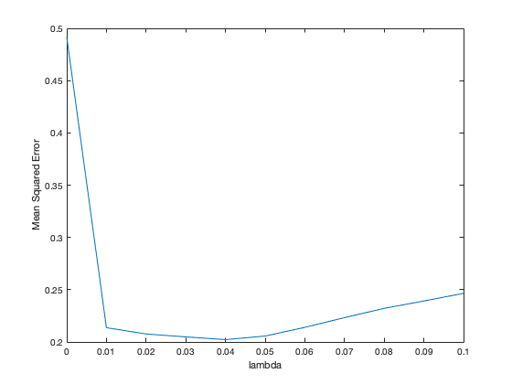
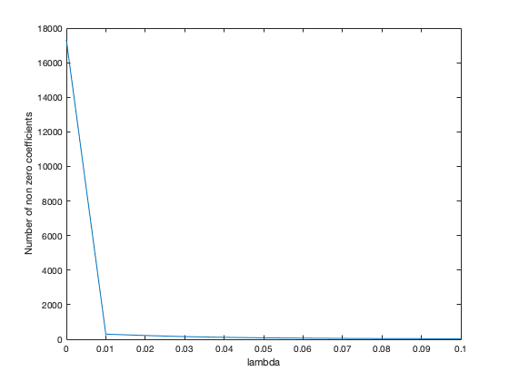
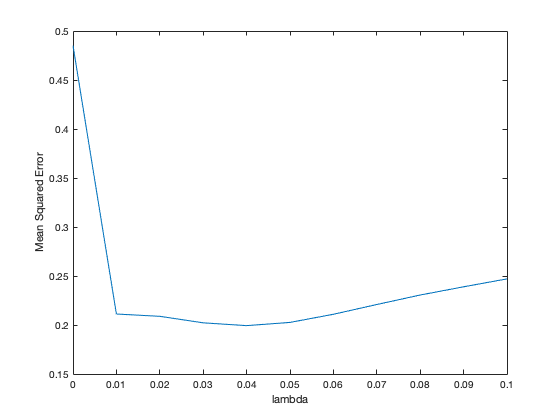
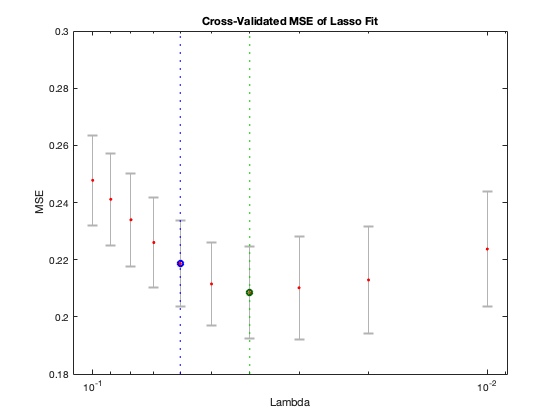
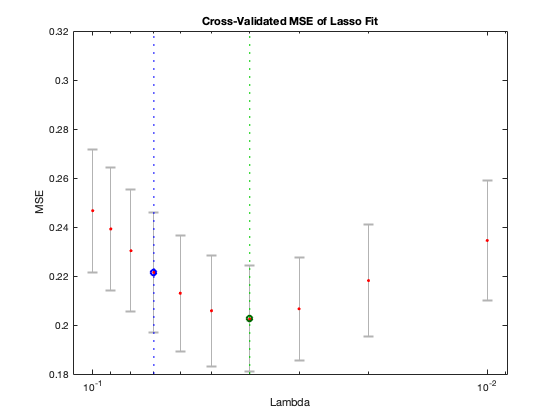

data = csvread('brca.csv');
lambda = generate_lambda(0, 0.1, 0.01);
Y = data(:, end);
X = data(:, 1:end-1);
disp("2a) 5-fold CV")
perform_cross_validation(X,Y,5, lambda, 1);
disp("Average MSE and Sparsity as a function of lambda")
snapnow
disp("")
disp("2b) 10-fold CV")
perform_cross_validation(X,Y,10, lambda, 3);
disp("Average MSE and Sparsity as a function of lambda");
snapnow
disp(" The optimal lambda value is same in case of 5-fold CV and 10-fold CV. The number of non-zeros decreases as we increase lambda.")
disp("")
rng default
disp("2c) 5-fold CV using lassoplot")
use_built_in(X, Y, 5, lambda);
disp("10-fold CV using lassoplot")
use_built_in(X, Y, 10, lambda);
disp("The optimal lambda value might have differed if the input data wasnt randomly permuted.");
disp("Also, lassoplot ignores lamda=0, as it reduces to OLS in this case");
function perform_cross_validation(X,Y,k, lambda, fig_no)
average_MSE = zeros(size(lambda));
average_non_zeros = zeros(size(lambda));
for j = 1:length(lambda)
c = lambda(j);
chunk_size = size(Y,1)/k;
for i=1:k
index = (i * chunk_size) - chunk_size;
X_test = X(index+1:index+chunk_size, :);
Y_test = Y(index+1:index+chunk_size, :);
X_train = [X(1:index, :);X(index+chunk_size+1:end, :)];
Y_train = [Y(1:index);Y(index+chunk_size+1:end)];
[B,FitInfo] = lasso(X_train, Y_train, "Lambda", c);
coef0 = FitInfo.Intercept;
average_MSE(j) = average_MSE(j) + mean((Y_test-(X_test * B + coef0)).^2);
average_non_zeros(j) = average_non_zeros(j) + nnz(B);
end
end
average_MSE = average_MSE/k;
average_non_zeros = average_non_zeros/k;
figure(fig_no);
plot(lambda, average_MSE);
xlabel('lambda')
ylabel('Mean Squared Error')
figure(fig_no+1);
plot(lambda, average_non_zeros);
xlabel('lambda')
ylabel('Number of non zero coefficients')
[M, min_idx] = min(average_MSE);
lamda_optimal = lambda(min_idx)
end
function use_built_in(X,Y, k, lambda)
[B, FitInfo] = lasso(X,Y,'Lambda', lambda, 'CV', k);
lassoPlot(B,FitInfo,'PlotType','CV');
snapnow
end
function lambda = generate_lambda(min, max, spacing)
lambda = [];
i = min;
while i <= max
lambda = [lambda; i];
i = i + spacing;
end
end
2a) 5-fold CV
lamda_optimal =
0.0400
Average MSE and Sparsity as a function of lambda
 
2b) 10-fold CV
lamda_optimal =
0.0400
Average MSE and Sparsity as a function of lambda

The optimal lambda value is same in case of 5-fold CV and 10-fold CV. The number of non-zeros decreases as we increase lambda.
2c) 5-fold CV using lassoplot

10-fold CV using lassoplot

The optimal lambda value might have differed if the input data wasnt randomly permuted.
Also, lassoplot ignores lamda=0, as it reduces to OLS in this case